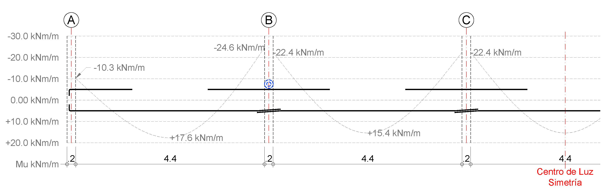

| Estudiante | Estado | Comenzado | Completado | Duración | Calificación |
|---|---|---|---|---|---|
| ⍓⎈⍜⎈⎈⍜⋔ ⍜⎈⎎⏁⟒⍀ ⎈⎈⎈⍜ | Finalizado | lunes, 12 de octubre de 2026, 11:49 | lunes, 12 de octubre de 2026, 16:53 | 5 horas 4 minutos | 5.0 de 5.0 (100%) |
Variables de entrada: Espesor $h = 17$ cm | $f'_c = 28$ MPa | $f_y = 420$ MPa | $M_u = 14$ kN·m/m
Determine el área de acero de diseño en mm²/m. Para ello, calcule el acero requerido por flexión ($A_{s,req}$) y compárelo con el refuerzo mínimo por retracción ($0.0018 \cdot A_g$). Adopte el valor máximo según la norma.
Consideraciones: Recubrimiento de 20 mm y barra preliminar N°3 ($\phi = 9.5$ mm).
Escriba solo el número, sin texto ni unidades. Use una cifra decimal (ej: 123.4).
Dado que $A_{s,min} > A_{s,req}$, la norma exige adoptar el refuerzo mínimo para garantizar el control de fisuración por retracción y temperatura.
$A_s = 306.0$ mm²/m
Referencia Crítica: NSR-10 C.12.10 y Figura CR12.10.2.
La figura muestra una losa armada en una dirección continua sobre el Apoyo Interior (Eje B). El punto azul señala el Refuerzo Superior de Momento Negativo.

Según la práctica estándar de despiece y la NSR-10, ¿cuál es el criterio principal que rige la longitud de este refuerzo en los vanos adyacentes?
Seleccione la opción que defina la exigencia estructural fundamental de anclaje.
La obligación primaria de todo refuerzo a flexión es garantizar su anclaje. Para el refuerzo de momento negativo en el apoyo, los numerales de C.12.10 exigen:
Extensión $\ge l_d$ desde la cara del apoyo
Aunque en la práctica se utilizan coeficientes como $L_n/3$ o $L_n/4$, estas longitudes solo son válidas si cumplen o exceden la longitud de desarrollo ($l_d$) calculada. El requisito de $l_d$ es la exigencia estructural fundamental para asegurar que la barra desarrolle su capacidad a tracción plena en la sección crítica.
Usted forma parte del equipo técnico de consultoría encargado del diseño estructural de una nueva institución educativa en el área metropolitana de Bucaramanga. Como parte del proyecto de infraestructura, se le ha asignado el diseño de una losa maciza continua de 3 tramos con una luz libre $l_n = 3.1$ m. La losa trabaja en una dirección. Los apoyos son vigas de ancho $b_w = 200$ mm, construidas monolíticamente con la losa.
PARTE 1: ANÁLISIS
Nota: Use luz entre ejes ($l$) para predimensionamiento y luz libre ($l_n$) para fuerzas internas.
PARTE 2: DISEÑO DE REFUERZO
Parámetros de Diseño:
Use refuerzo No. 4 ($d_b = 12.7$ mm) y recubrimiento neto de 20 mm.
PARTE 3: VERIFICACIÓN DE CORTANTE
1. Geometría y Cargas
2. Fuerzas de Diseño (NSR-10 C.8.3.3)
3. Refuerzo y Separación
4. Verificación de Seguridad
Análisis Crítico: Recuerde que en losas macizas, si el cortante falla, la solución más eficiente probablemente no es añadir estribos (difíciles de instalar en espesores pequeños), sino aumentar el peralte h para mejorar la capacidad intrínseca del concreto.
Contexto de Diseño:
Usted lidera el diseño de una losa maciza armada en dos direcciones para un nuevo centro de salud. El sistema se apoya directamente sobre columnas (sin ábacos ni capiteles). Para garantizar la seguridad ante fallas frágiles, debe verificar el estado límite de cortante bidireccional.
Datos Técnicos Suministrados:
Consideraciones de Análisis Estructural:
Nota para el cálculo de peralte efectivo ($d$):
Considere un peralte promedio que represente ambas capas de refuerzo mediante la expresión:
$d_{prom} = h - \text{recubrimiento} - d_{barra}$
Use un recubrimiento libre de 25 mm.
PARTE 1: DEMANDA DE CORTANTE
PARTE 2: CAPACIDAD NOMINAL DEL CONCRETO ($V_c$)
Evalúe las tres condiciones de la NSR-10 C.11.11.2.1. Considere el perímetro crítico ubicado a una distancia $d/2$ de la cara de la columna. Para columna interior, use $\alpha_s = 40$ (NSR-10).
PARTE 3: VERIFICACIÓN FINAL
1. Parámetros Críticos
2. Demanda de Cortante ($V_u$)
3. Resistencia del Concreto ($V_c$) - NSR-10 C.11.11.2.1
4. Análisis de Integridad Estructural
Reflexión Técnica: La falla por punzonamiento es de tipo frágil y ocurre sin redistribución significativa de esfuerzos. Un índice de capacidad $iC < 1.0$ indica que la losa no desarrolla la resistencia necesaria en el perímetro crítico, lo cual no es aceptable en elementos que soportan cargas gravitacionales permanentes.
En estos casos, el diseño debe ajustarse mediante:
En edificaciones esenciales, este chequeo cobra especial relevancia debido a la necesidad de garantizar un comportamiento estructural confiable frente a modos de falla no dúctiles.
Indicaciones: Ingrese el valor numérico con la precisión indicada.
Una escalera recta de 1.20 m de ancho tiene una luz inclinada de 4.2 m y está apoyada en sus extremos superior e inferior. La carga última total (1.2D+1.6L incluyendo peso propio) es 14.0 kN/m².
Calcule el momento último por metro de ancho y determine el área de acero requerida, considerando:
Indique $A_s$ final en mm²/m. Escriba solo el número, sin texto adicional ni unidades. Use una sola cifra decimal.
💡 Análisis Estructural:
Las escaleras se analizan como vigas simplemente apoyadas donde el refuerzo principal va en la cara inferior. Ojo: El peso propio es mayor que en una losa horizontal debido a la inclinación del tramo; omitir este factor subestima la carga real de diseño.
Suba en un único archivo PDF todos sus cálculos detallados, apuntes y procedimientos usados en este cuestionario.
⚠️ Nota: Este archivo será requisito indispensable para cualquier solicitud de revisión de nota o reclamo posterior.